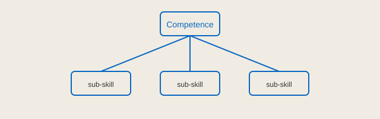

Skill engineering treats capability as something you can deliberately design rather than something you simply accumulate by accident. Instead of hoping that experience alone will compound into mastery, the practitioner maps the terrain of a discipline, identifies the load-bearing sub-skills, and then builds a training loop that exercises each one under realistic pressure.
The first move is decomposition. Any nontrivial competence hides a lattice of smaller competencies, and most people plateau because one weak strand quietly caps the whole rope. By naming the strands explicitly, you convert a vague ambition into a set of concrete, trainable targets that can each be measured and improved on their own schedule.

The second move is instrumentation. If you cannot see a skill, you cannot steer it, so the engineer invents cheap proxies for progress: a rubric, a timed drill, a recurring artifact that can be compared week over week. These signals do not need to be perfect; they need to be consistent enough that trends become visible before they harden into habits.
The third move is deliberate friction. Comfortable repetition produces fluency at the level you already own and almost nothing above it. The training loop therefore introduces calibrated difficulty — slightly harder problems, tighter constraints, shorter clocks — so that each session sits just past the edge of what feels automatic.
Capability is not a mood you wait for; it is a system you build, inspect, and tune until the results stop surprising you.
Finally, the craft depends on recovery and consolidation. Skill is written during rest as much as during effort, and an engineer who ignores sleep, spacing, and reflection is simply leaking most of the gains they worked to produce. The loop closes when review feeds back into decomposition, and the whole cycle begins again one level higher.
Approached this way, expertise loses its mystique. It becomes a designed artifact: a stack of legible sub-skills, honest instruments, and a training loop that keeps every strand of the rope under tension. That is the quiet promise of skill engineering.